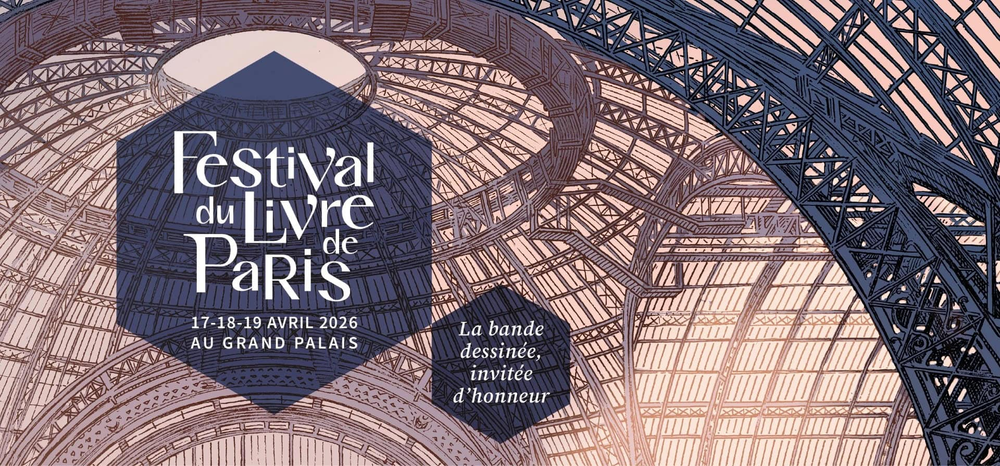

Festival du Livre de Paris

Événement du 17 au 19 Avril 2026
Le Festival du Livre de Paris est un rendez-vous incontournable pour tous les passionnés d’histoires, qu’elles soient écrites, dessinées ou imaginées. Organisé au Grand Palais, cet événement réunit auteurs, éditeurs et fans autour des dernières nouveautés, y compris dans l’univers du manga et de la bande dessinée. Entre séances de dédicaces, rencontres et découvertes, c’est l’occasion parfaite de plonger dans de nouveaux mondes et de dénicher ses prochaines lectures. Un véritable moment de culture et d’évasion, à ne pas manquer pour tous les amoureux de fiction !